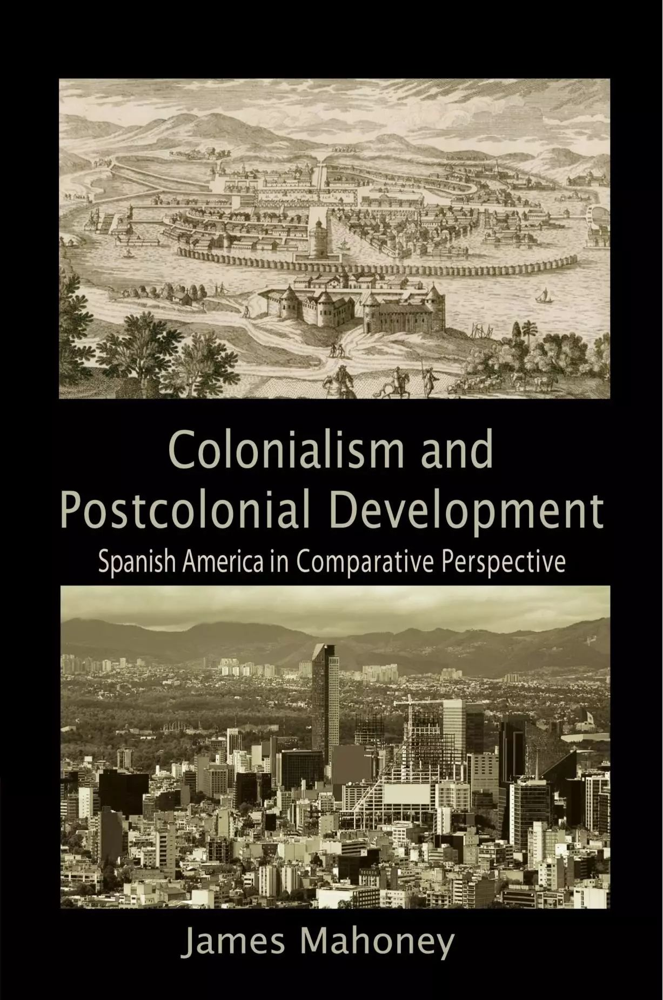

殖民主义与后殖民发展——当代比较政治的扛鼎之作
收录于合集
 文献来源： JamesMahoney， Colonialism and Postcolonial
Development ： Spanish America in Comparative Perspective ，New
Yok：Cambridge University Press，2010
文献来源： JamesMahoney， Colonialism and Postcolonial
Development ： Spanish America in Comparative Perspective ，New
Yok：Cambridge University Press，2010
作者简介： 詹姆斯·马洪尼（James Mahoney），美国西北大学政治学系与社会学系双聘教授，社会学系主任，美国政治学会（APSA）委员会委员，曾在美国政治学会及美国社会学会中的四个分会担任主席，研究领域涉及拉美政治、发展研究以及定性与多元方法论等。
本期，政文观止编辑部为大家推荐一本拉美研究以及比较历史分析领域的重要作品——《殖民者主义与后殖民发展：比较视野下的西属拉丁美洲》，作者是美国西北大学政治学与社会学教授詹姆斯·马洪尼（ James Mahoney）。
《殖民主义与后殖民发展》立足“国富国穷”这一社会科学研究的核心命题，试图解释西属拉美的诸国家为什么一个世纪以来在发展的相对水平（relative level of development）上表现的大致稳定。作者认为，这种相对稳定的发展水平要求研究者进行更长时段的因果追溯，殖民主义（colonialism）在型塑国家发展水平上发挥了重要的作用。
在有关国家发展的研究中，长期存在着制度决定论与地理决定论的纷争。作为历史制度主义的秉持者，马洪尼认为殖民制度在殖民地的长时段发展中起着至关重要的作用。但是不同于单纯的唯制度论者，作者强调需要一种“结合”（fit）的思路进行思考，只有深刻认识殖民者的制度、殖民地的现实以及二者在特定时空的结合，才是理解后殖民国家不同发展程度的关键。
是什么原因导致了殖民者在殖民地建立了不同的统治模式。阿西莫格鲁（Daron Acemoglu）等人认为是死亡率，而恩格尔曼（Stanley L. Engerman）等人则强调资源禀赋。马洪尼认为，土著社会的制度复杂程度（level of institutionalcomplexity）才是影响殖民方式的重要因素。在哈布斯堡王朝治下的西班牙，统治者采取重商主义的殖民政策，此类政策倾向于对关注短期利益、对资源的掠取以及限制商业的贸易的发展，在这种政策的背景下，那些本土社会较为复杂的地区往往成为殖民地的中心，在这些地区殖民者能够更加轻而易举的实施资源的攫取，而矿物资源和距离殖民地首都的距离这两个因素在成为殖民地中心过程中发挥了重要作用；但是到了18世纪之后，波旁王朝替代哈布斯堡王朝成为了西班牙的主宰，随着国内政治系统的一系列改革，殖民方式也变为自由主义的殖民政策，该政策更倾向于长期投资以及市场导向的贸易活动，因此在此背景下复杂的本土社会反而不利于自由政策的殖民，因此在该时期殖民地的中心也发生了某些变化，两类地区更容易更为新的中心：一是那些本土土著居民稀少并拥有很多非洲奴隶的地区，二是那些发现了新的矿产资源的老殖民地中心。

不同时期的殖民地位置所带来的是阶级权力的差异，在重商主义时期处于殖民地中心的国家中土地精英更容易获得权力，而自由主义时期的殖民地中心则更有利于商人阶级的崛起，不同阶级的权力对比对独立之后的经济社会发展的轨迹局决定性的作用，而一个国家中的阶级力量对比是由两个殖民时期其所处的中心- 边缘位置决定的。值得注意是，智利、洪都拉斯等六个国家在两类殖民主义时期均处于边缘地带，因此殖民活动对国家影响有限，因此这些独立初期发展水平类似的国家日后经历的某些偶然事件在经济社会发展中发挥了重要作用。马洪尼认为，战争是极其重要的因素，只有那些有效避免了战争威胁（如哥斯达黎加）以及在战争中取胜（如智利）的国家才能有能力实施相应的改革，在日后的经济社会发展中才能取得不错的水平。
至此，通过三个因素——重商主义殖民时期的位置（M表示中心，m表示边缘）、自由主义殖民时期的位置（L表示中心，l表示边缘）、战争（W经历大规模战争，w表示避免战争或在战争中取胜）的不同组合，以及通过阶级力量所串联出的“前殖民社会的复杂程度- 殖民主义水平-发展程度”这一因果机制，作者勾勒出了西属拉丁美洲15国家所取得不同发展水平的解释框架：
高经济发展=mL+mlw
中经济发展=ML
低经济发展=Ml+mlW
作为一般理论（general theory），马洪尼将其扩展到了葡萄牙的殖民地（巴西）以及英国殖民地的实践，其有效性同样得到了很好的验证。
该著作的亮点是显而易见的：在研究议题上，对“国家兴衰”是社会科学最为经典的议题，对其关注显然比民主与民主化更为持久且深刻；在对待政治与政治学的态度上，作者印证了彼得·豪尔所谓“政治是时空条件所构建的过程”（politics as a processstructured in space and time）的看法，这很好的避免了许多量化学者在研究过程中对历史与地域因素的忽视；在案例选择上，作者通过15个案例的全样本分析，避免了比较案例研究的通常存在选择性偏差等问题；在研究方法上，作者采取了案例内研究（within- case study）、比较序列方法（comparative sequential method）、以及布尔法比较，巧妙且熟练的采取了因素+机制的分析方法，通过实质研究展现了比较历史分析在方法论上的最新进展；在行文与逻辑上，作者思路清晰、笔触灵动且逻辑性极强，从而使得读者的思维可以与作者高度一致，非常耐读；在知识积累上，近一百多页的注释与参考文献，以及马洪尼与格尔茨（Gary Goertz）共同主持的美国国家科学基金项目“殖民主义及其遗产”数据库为该书的形成奠定了坚实的史实基础。

当然，本书同样存在某些问题。首先，尽管马洪尼的理论复杂程度以及与历史的契合性远胜于绝大部分聚焦该领域的发展经济学家，但其核心的分析框架依旧是建立在阿西莫格鲁等人研究基础之上，对于“财富逆转”（reversal of the fortune）的解释可以归结于自由主义相较于重商主义的胜利，虽然作者努力避免产权视角下的简约色彩，但似乎依旧忽视了其他的因素（当然这在马洪尼最新的研究中得到了补充）；其次是来自历史学家的批评，如科茨沃斯（John H. Coatsworth）对作者类型学提出了质疑，认为殖民者其实并不在于土著社会的复杂性而仅仅旨在掠夺财富，此类批判也可能是所有基于历史的社会科学研究者的共同困境；同时，作者将殖民制度看作是外生性的，但这似乎忽视了外部资源流入对宗主国以及欧洲国家权力对比之间所起到的作用，即由重商主义转向自由主义过程中殖民地财富所发挥的影响。
还有一种观点认为，马洪尼的研究具有太重的决定论色彩，因为如果依照作者思路，后殖民国家似乎完全无法改变其发展层次的相对位置，这很大程度上忽视了行为人的作用。在另一部讨论英国殖民主义与后殖民发展的著作中，兰格（Matthew Lange）认为国家领导人的主观能动性是可以改变殖民遗产（然而兰格的研究与马洪尼比起来实在是相形见绌了）。但是回顾现实，无论是中等收入陷阱还是巴西奇迹的衰退，拉美诸国自独立以来的几百年间似乎真的很难改变业已框定的命运轨迹。这是因为，拉丁美洲自独立以来就缺少足以改变社会结构与阶级关系的重大变革（如战争或社会革命），殖民遗产所展现的路径依赖毫无疑问是持久且强韧的。
《殖民主义与后殖民发展》是比较历史分析新世纪以来的扛鼎之作，本书获得了美国政治学会（比较政治分会、政治与历史分会、国际历史与政治分会）和美国社会学会（发展分会、政治社会学分会、比较历史社会学分会）六个分会的最佳著作奖，由此可见其在学界的分量。关于作者詹姆斯·马洪尼，本公众号在之前的文章《路径依赖视角下中美洲的政体变迁》有过介绍，这是一位十分具有学术抱负、创新精神与共同体意识的学者。
在本书的前言部分，作者简述了对比较历史分析的执着、选题的缘起，并列出了一大串感谢的人。其中有一段读起来颇令人动容。马洪尼写道：“我的学术生涯历经加州大学伯克利分校政治学系、布朗大学社会学系以及如今的西北大学政治学系与社会学系。在我生命的每个节点，总有那么一两个支持我的人给予了我难以估量的帮助。感谢大卫·科利尔（David Collier是马洪尼的博士导师，直接影响了作者对拉美研究以及定性方法的看法，马洪尼也坦言自己正是为了成为科利尔的学生才考取伯克利分校的）、彼得·埃文斯（Peter Evens是伯克利分校社会学系教授，其比较政治经济学的思想对学术时代的马洪尼产生了深刻影响）、迪特里希·鲁施迈耶（Dietrich Rueschemeyer)是布朗大学社会学系教授，对事业起步时期的马洪尼帮助颇多，二人合编了 Comparative Histrical Analysis in the Social Science ） 、凯瑟琳·西伦（Kathleen Thelen是麻省理工大学政治学教授，曾任教于西北大学政治学系，在历史制度主义与制度变迁方面功底深厚，二人曾合编 Explaining InstitutionalChange 与 Advances inComparative-Histrical Analysis ）……西达·斯考切波虽然不是我的导师或同事，但她却是我的intellectual hero（实在不知道这个词怎么翻译比较好），我希望读者们能够感受到她的观点是如何深刻的影响了本书的写作。”